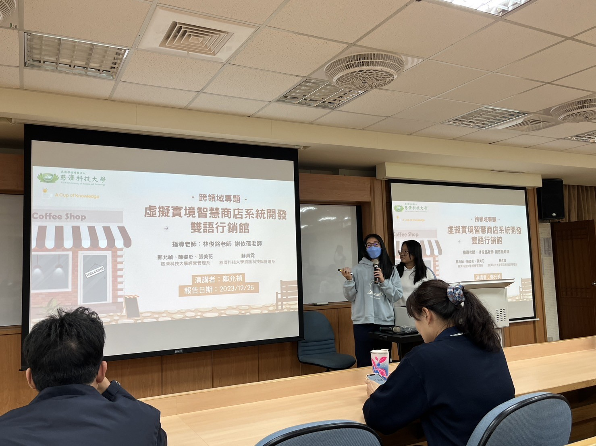
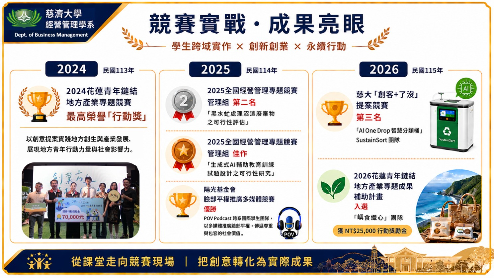
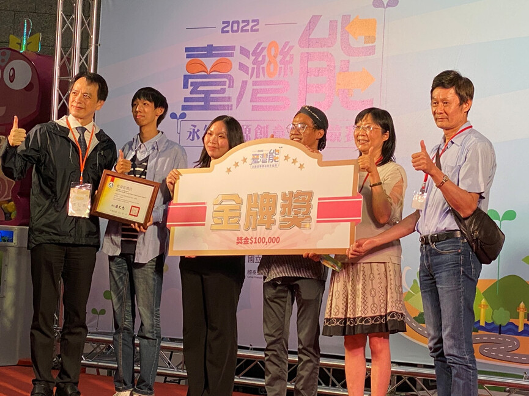
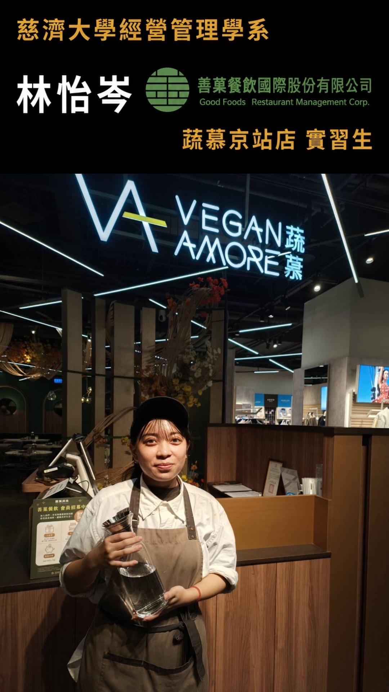
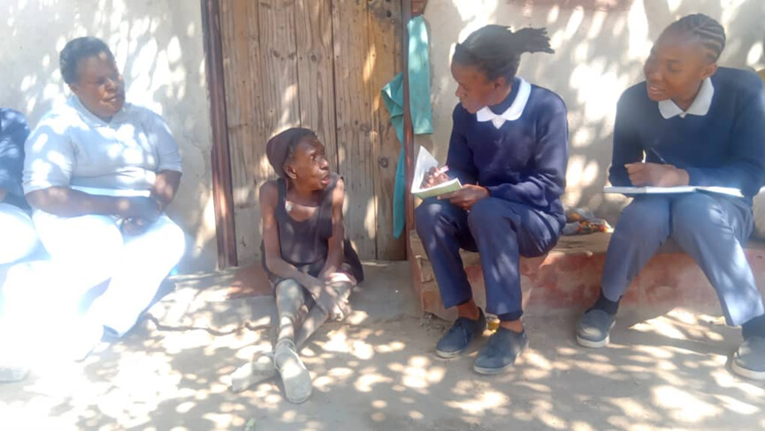
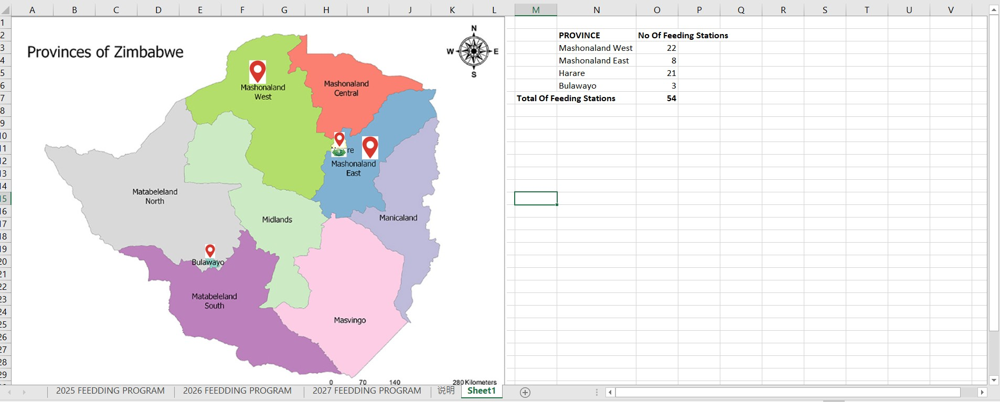
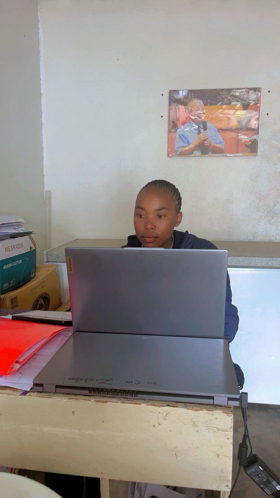
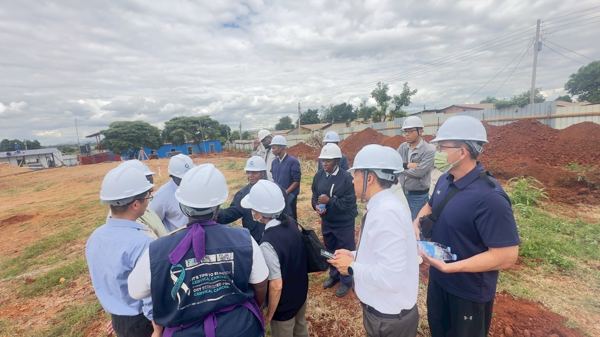

這裡整理學生的數位作品、課程專題、競賽紀錄與實習經驗。每筆成果依內容型態呈現作品連結、照片或來源；學生姓名與照片公開方式，依本人及相關單位授權確認。
學生學習成果
P102
TCU Campus Space
慈大空間查詢
DIGITAL & INTERACTIVETCU Campus Space（慈大空間查詢）
協助新生、訪客與校內成員快速查詢校園空間資訊，作為經營管理與空間服務設計的學生專題成果。
校園服務空間資訊
作者姓名：依授權確認後補充
瀏覽作品（新分頁） →
P104
WhisperTour
DIGITAL & INTERACTIVEWhisperTour
讓導遊與遊客使用各自手機掃描 QR Code，即可在需要降低音量的空間中連線導覽。
導覽服務行動互動
作者姓名：依授權確認後補充
瀏覽作品（新分頁） →
P134
Typing Blaster
英打快手
DIGITAL & INTERACTIVE英打快手 Typing Blaster
以互動方式練習英文打字，提醒使用者在 AI 時代仍可持續培養基本輸入能力。
學習遊戲英文輸入
作者姓名：依授權確認後補充
瀏覽作品（新分頁） →
P138
I'm the Chef
我是大廚
DIGITAL & INTERACTIVE我是大廚 I'm the Chef
進廚房之前，先來這裡試試身手；以互動情境讓使用者體驗料理挑戰。
互動遊戲餐旅管理
作者姓名：依授權確認後補充
瀏覽作品（新分頁） →
P140
Hualien Bus
花蓮公車地圖
DIGITAL & INTERACTIVE花蓮公車地圖 Hualien Bus
以地圖呈現花蓮公車時間與行經路線；頁面所示時間為推估值。
地圖應用交通資訊
作者姓名：依授權確認後補充
瀏覽作品（新分頁） →


COURSE PROJECT · 2024跨領域專題｜VR 智慧商店
以成果發表與團隊協作照片記錄專題歷程；學生名單、課程資訊與作品說明待授權及資料確認後補充。
跨領域專題虛擬實境
作者姓名：依授權確認後補充
參閱專題資料（新分頁） →

COURSE PROJECT · 2026經管專題｜莫五系統
以團隊協作照片呈現專題討論情境；作品目標、功能介紹與成員資訊待整理確認。
課程專題團隊協作
作者姓名：依授權確認後補充
參閱專題資料（新分頁） →
COMPETITION & ACHIEVEMENTS競賽實戰・成果亮眼
學生跨域實作 × 創新創業 × 永續行動

學生跨域實作 × 創新創業 × 永續行動｜競賽與成果（2024–2026）成果文字整理
2024 · 民國 113 年花蓮青年鏈結地方產業專題競賽
最高榮譽：「行動獎」
以創意提案實踐地方創生與產業發展，展現地方青年行動力量與社會影響力。
地方創生產業發展行動實踐
2025 · 民國 114 年全國經營管理專題競賽｜管理組
第二名｜「黑水虻處理沼渣廢棄物之可行性評估」
佳作｜「生成式 AI 輔助教育訓練試題設計之可行性研究」
舊版系網成果公告 → 2025 · 民國 114 年陽光基金會臉部平權推廣多媒體競賽
優勝｜POV Podcast 跨系國際學生團隊
以多媒體推廣臉部平權，傳遞尊重與包容的社會價值。
Podcast跨系合作臉部平權
2026 · 民國 115 年慈大「創客+了沒」提案競賽
第三名｜「AI One Drop 智慧分類桶」SustainSort 團隊
創新提案永續應用
舊版系網成果公告 → 2026 · 民國 115 年花蓮青年鏈結地方產業專題成果補助計畫
入選｜「嶼食織心」團隊
獲 NT$25,000 行動獎勵金。
地方產業永續行動

榮獲2022年度教育部【臺灣『能』永續能源創意實作競賽】，大專「綠能創新組」金牌獎108-2（2020/4）參加教育部【臺灣『能』永續能源創意實作競賽】
照片人物：經營管理系曾喜陽、張美花、艾菲、何強豪
成果名稱、名次及補助金額依提供的競賽成果圖整理；相關團隊與作品資訊後續可依正式公告補充。
從課堂走向競賽現場｜把創意轉化為實際成果

INTERNSHIP · RESTAURANT SERVICE善菓屋蔬慕餐廳｜京站門市
善菓屋蔬慕餐廳（蔬慕京站店）位於臺北車站旁的京站時尚廣場，鄰近臺北轉運站，身處交通與商業活動密集的區域。經營管理學系學生在此進行一學年實習，學習餐飲內場作業與外場服務技巧，累積第一線門市營運與顧客服務經驗。
一學年實習餐飲服務內外場實務
實習生：林怡岑｜善菓屋蔬慕餐廳 Good Foods Restaurant Management Corp.

115-1 · 2026/7辛巴威海外實習
經營管理學系沈善涵同學在辛巴威進行一學年實習，陪同辛巴威慈濟分會進行社區關懷。
海外實習社區關懷辛巴威
照片中的人物或單位：Sande Martha，經營管理學系
INTERNSHIP · BOOKSTORE SERVICE靜思書軒門市服務實習
靜思書軒以閱讀與人文為核心，營造沉靜自在的閱讀空間，並透過書籍與心靈講座傳遞人文理念。經營管理學系學生在花蓮本店參與門市服務實習，於實務中認識接待服務與日常營運；書軒歡迎本系學生實習，也歡迎畢業後投入就業發展。
照片中的人物或單位：靜思書軒花蓮本店，經營管理學系曾柏軒、陳旺。
認識靜思書軒（官方網站） ↗

INTERNSHIP服務據點地圖與資料整理
照片呈現據點地圖與資料表整理成果；實習單位及資料可公開範圍待確認。
資料整理資訊視覺化
作者姓名：依授權確認後補充

INTERNSHIP實習工作紀錄
以工作情境照片呈現實習日常；具體任務與學生心得待核對後補充。
職場體驗實務學習
作者姓名：依授權確認後補充

INTERNSHIP慈善義賣活動
照片記錄義賣攤位與團隊活動；活動時間、主辦資訊與個人心得待確認。
公益服務活動執行
作者姓名：依授權確認後補充

INTERNSHIP建設專案場域參訪
照片呈現團隊前往建設場域的實地參訪；合作單位與實習心得待核實後補充。
場域觀察專案實務
作者姓名：依授權確認後補充

INTERNSHIP現地說明與專案觀察
照片記錄團隊在場域中聆聽說明與觀察；單位資訊及心得內容待確認。
現場觀察團隊學習
作者姓名：依授權確認後補充
本頁為 GH 內容審閱版本。照片、作品資訊與姓名標示，正式核定前仍須逐項完成本人及相關單位的公開授權確認；如需更正或撤下，請聯絡系辦。